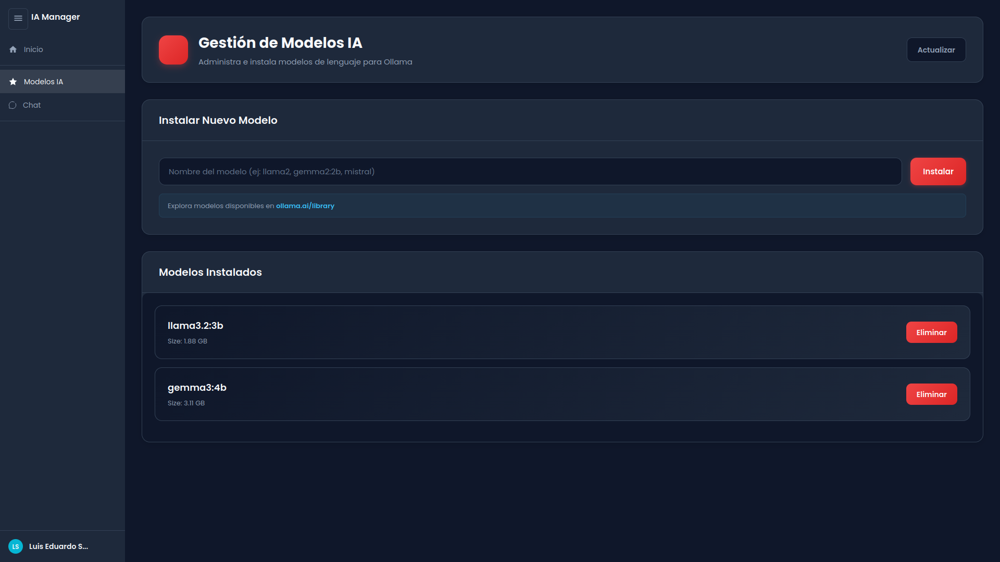

01
Ver Modelos Instalados
Consulta todos los modelos de inteligencia artificial que tienes disponibles en tu sistema local. Esta función te permite visualizar información detallada como el tamaño, versión y parámetros de cada modelo.
¿Cómo funciona?
- Accede al listado completo de tus modelos instalados
- Visualiza el tamaño en disco de cada modelo
- Consulta la cantidad de parámetros (7B, 13B, 70B, etc.)
- Identifica rápidamente qué modelos están disponibles para usar
💡 Tip: Los modelos con más parámetros
generalmente ofrecen respuestas más precisas, pero requieren más
recursos de tu computadora.
